5580C air bag system
- Path
- Descriptions > 55 ELECTRICAL EQUIPMENT > 5580 SPECIAL ACCESSORIES > 5580C air bag system
- Kind
- system description
- Applies to
- all engines; all production periods
- Interactive page
- https://sloeber94.github.io/elrnDB-fMltpl/en/#/2888293
Applies to: all engines; all production periods
The car is fitted with an electronically-controlled safety system which, in the case of a front-end crash of some severity, activates the driver's and passenger's Air Bags.
The electronic control unit manages the entire system, checking all the components and when necessary activating the Air Bags.
The passenger Air Bag can be deactivated manually by means of a specific switch.
So that this device operates with maximum efficiency, the driver and front passenger must fasten their seat belts with pretensioners, which are mechanical, and so not controlled by the electronic control unit described.
The system is connected to the:
- Diagnostic socket for checking the system with the Examiner or other diagnostic equipment
- Warning light in the instrument panel for signalling faults
- Passenger Air Bag disablement warning light on the instrument panel
The main components of the system are interconnected by means of specific wiring which is easily recognizable as it has a yellow sheath.
The system consists of the following components:
- electronic cotnrol unit
- driver Air Bag
- passenger Air Bag
- switch for disabling passenger Air Bag
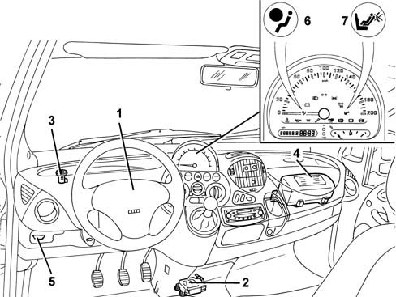
1, Driver Air Bag 2, Electronic control unit 3, Switch for disabling passenger Air Bag 4, Passenger Air Bag 5, Diagnostic socket for checking the system 6, Warning light in the instrument panel for signalling faults 7, Warning light in the instrument panel for signalling passenger Air Bag disabled
Electronic cotnrol unit
The electronic control unit manages the entire system, checking all the components and when necessary activating the Air Bags.
Functions
In addition, this control unit has the following functions:
- Energy accumulation : the control unit is supplied with 12 V when the ignition is on, but can nevertheless continue operating for a few fractions of a second after the supply has been cut off. This is possible thanks to the presence of a buffer condenser which accumulates sufficient electrical energy to produce the Air Bag activating signal. The operation of the system is therefore guaranteed even if the impact causes a fall in the system voltage (e.g. battery damaged or broken, break in the supply cables, etc.).
- Check attachment : the control logic also checks the electrical contact between the control unit casing and the bodywork, thus ensuring a rigid connection to the body shell.
- Fa ilure m emory: whilst the vehicle is running, the electronic continuously carries out the system fault diagnosis, checking the continuity of the circuits and components. If a fault is detected it is memorized and the "Air Bag failure" warning light in the instrument panel comes on at the same time. The failure memory can be consulted by connecting the diagnostic equipment (Examiner or S.D.C.) to the diagnostic socket, as described below.
- Crash memory: the control unit microprocessor carries out complex calculation algorhythms for the signal coming from the accelerometer sensor and determines the severity of the impact. According to the severity and, with the go ahead of the safety sensor, it sends a signal to activate the Air Bags. This activation order is stored in a special crash memory which contains information relating to the exceeding of the intervention thresholds and the go-ahead for the safety sensor.
- Wiring recognition : the control unit can recognize the type of system installed: complete system or reduced system without passenger Air Bag. This takes place via a specific recognition pin on the control unit: pin 30 earthed means passenger's Air Bag present, while pin 30 open means passenger's Air Bag absent.
Location
The control unit is situated on the floor in a central position under the dashboard, and is secured rigidly to the bodywork; in this way the deceleration sensors located inside it are near the baricentre and can detect precisely the deceleration of the entire car.
The control unit should always be fitted with the arrow pointing in the direction the vehicle is travelling in.
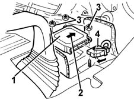
1, Electronic control unit 2, Arrow indicating the direction of travel 3, Fixings 4, Electrical connection
Control unit pin-out
-
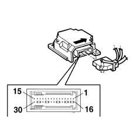
Pin, Signal 1, Activation (-) of driver's Air Bag 2, Driver's Air Bag activation (+) 3, Passenger Air Bag activation - internal generator 4, Passenger Air Bag activation (+) - internal generator 5, Passenger Air Bag disabling device (-) 6, (N.C.) 7, (N.C.) 8, Passenger Air Bag disablement device (+) 9, Diagnostic serial line K 10, (N.C.) 11, (N.C.) 12, Crash output (N.C.) 13, Passenger Air Bag activation (+) - external generator 14, Passenger Air Bag activation (-) - external generator 15, Supply controlled by the ignition 16, Driver's Air Bag D.C. bar 17, Driver's Air Bag D.D. bar 18, Passenger Air Bag D.C. bar - external generator 19, Passenger Air Bag D.C. bar - external generator 20, Passenger Air Bag disabling warning light signal 21, D.C. bar 22, D.C. bar 23, Air Bag system failure warning light signal 24, Earth 25, D.C. bar 26, D.C. bar 27, Passenger presence sensor signal (N.C.) 28, Passenger Air Bag D.C. bar - internal generator 29, Passenger Air Bag D.C. bar - internal generator 30, wiring recognition signal (version with passenger Air Bag)
Driver's Air Bag
The Air Bag is a passive safety device made up of a bag which, in the case of a frontal impact, automatically inflates placing itself between the bodies of the vehicle occupants and the structure of the front part of the passenger compartment.
The driver's Air Bag module is located in the centre of the steering wheel; it is fitted on a rocker plate which allows the operation of the horns.
The plate, fixed to the steering wheel by two bolts, houses the folded bag and gas generator device.
The gas generator is of a new "ecological" design: the gases which are released are neither toxic nor irritant.
The electrical connector of the gas generator adopts a particular safety device: a stop lug only closes when the connector has been inserted correctly, and it deactivates a short circuit clip inside the connector which prevents any possibility of accidental activation of the module.
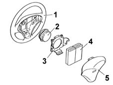
1, Steering wheel 2, Gas generator 3, Rocker plate 4, Folded bag 5, Cover
Operation
The generator can be electrically activated by a signal coming from the electronic control unit.
Thus a "tablet" of pyrotechnic substance is primed, which causes the expansion of a small quantity of primer gas, which in turn causes a larger quantity of pyrotechnic material, located in an outer circular ring, to react. This "NON AZIDE" material (i.e. with no sodium nitride) produces a gas (mainly nitrogen) which emerges from the special holes and expands in the bag, whose total capacity is about 42 litres.
After being inflated by the gas, the bag deflates immediately through the suitably calibrated holes on the rear.
The module plastic cover opens upwards along the pre-determined breakage lines which allow the bag to come out completely.
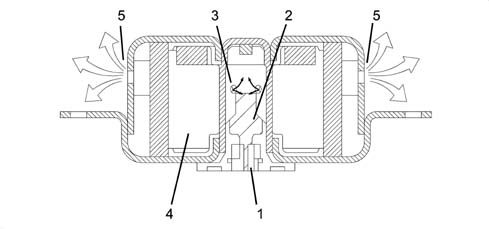
1, Electrical connection 2, Pyrotechnic charge 3, Deflation holes 4, Gas generator 5, Bag inflation holes
Clock spring
A clock spring device allows the Air Bag module connecting cables, fitted in the steering wheel, to follow the rotation of the latter without danger of breaking.
This device is fitted on the steering column switch unit and consists of two plates, the lower one fixed to the steering column switch unit and the upper wheel fixed to the steering wheel.
The module connecting cables and the horn buttons are wound around inside the two plates allowing them to follow the movement of the steering wheel.
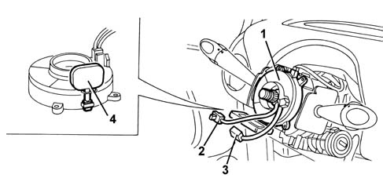
1, Clock spring 2, Air Bag electrical connection 3, Horn electrical connection 4, Safety device
An internal safety device automatically locks the rotation of the two plates when the steering wheel is removed from the clock spring. This prevents the top plate, no longer attached to the steering wheel, from rotating freely and so winding or unwinding the clock spring which might then break.
The new device is supplied with a safety key.
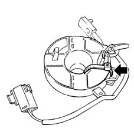
Passenger Air Bag
The passenger Air Bag module is located on the facia, and it protects the two front passengers.
It is a module which consists of two gas generators which inflate a single large bag (120 litres) of a suitable shape to protect the occupants of the central and side seats. This absolutely innovative solution provides optimum protection for both occupants.
The composition and operation are the same as the driver's Air Bag, but with two gas generators, of the same type as that installed in the steering wheel.
The passenger module is fixed directly to the vehicle crossmember by a special bracket.
A linen-faced cover contains the folded bag, but does not prevent it from emerging in the case of activation.
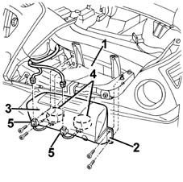
1, Vehicle crossmember 2, Passenger Air Bag module 3, Bag cover 4, Gas generators 5, Electrical connections
Module flap
A plastic flap whichis integrated in the dashboard allows the bag to come out correctly when it inflates.
It is connected to the dashboard by means of four metal pins.
It is also fixed to the crossmember by two retaining belts which, in the case of activation of the Air Bag, allow the flap to rotate and retain it.
In the case of intervention of the Air Bag, the flap opens upwards, thereby allowing the bag to come out completely and correctly.
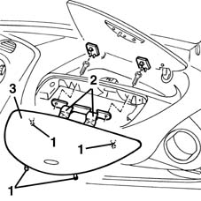
1, Fixing pins 2, Retaining belts 3, Flap
Applies to: all engines; all production periods; only with equipment: ESP
The car may be equipped with a full safety system consisting of:
- Front driver and passenger airbags
- Sidebags
The system operates:
- the driver and passenger Air Bags in the case of a fairly severe frontal impact .
- In the case of a side impact of a certain magnitude, the corresponding side Air Bag is activated (only on the side where the impact has taken place).
The system consists of the following components:
- Electronic control unit
- Driver's Air Bag
- Passenger air bag
- switch for disabling passenger Air Bag
- Side impact sensor
- Side impact sensor
- Right sidebag
- Left sidebag
Electronic control unit
The electronic control unit manages the entire system, checking all the components and when necessary activating the Air Bags.
Functions
Operation in the case of frontal impact
Inside the control unit, there is an accelerometric sensor whose signal, suitably processed by a microprocessor, makes it possible to determine the severity of an impact and consequently to decide whether or not to activate the Air Bags.
A second sensor with safety functions gives the enablement for activation of the Air Bags.
Operation in the case of side impact
Accelerometers on both front door pillars detects side impacts and sends a signal to the control unit.
This signal is processed by a microprocessor inside the control unit. this detects the severity of the side impact and decides whether to set off the sidebag on the side where impact took place. The side bag can only be set off if activation is enabled by the safety sensor.
Individual Side Bags work independently of one another and independently of the front Air Bags.
Location
The control unit is situated on the floor in a central position under the dashboard, and is secured rigidly to the bodywork; in this way the deceleration sensors located inside it are near the baricentre and can detect precisely the deceleration of the entire car.
The control unit should always be fitted with the arrow pointing in the direction the vehicle is travelling in.
1, Electronic control unit 2, Arrow indicating the direction of travel 3, Fixings 4, Electrical connection
Control unit pin-out
-
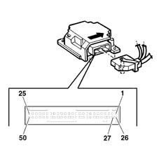
Pin, Signal 1, Driver's Air Bag activation (-) 2, Driver's Air Bag activation (+) 3, Passenger Air Bag activation - internal generator 4, Passenger Air Bag activation (+) - internal generator 5, Passenger Air Bag disabling device (-) 6, (N.C.) 7, (N.C.) 8, Passenger Air Bag disablement device (+) 9, Diagnostic serial line K 10, (N.C.) 11, (N.C.) 12, Crash output (N.C.) 13, Passenger Air Bag activation (+) - external generator 14, Passenger Air Bag activation (-) - external generator 15, Supply controlled by the ignition 16, Driver's Side Bag activation (+) 17, Passenger Side Bag activation (-) 18, Passenger Side Bag activation (+) 19, Passenger Side Bag activation (-) 20, N.C. 21, N.C. 22, Driver's Side Bag sensor signal 23, Passenger Side Bag sensor signal 24, Driver's Side Bag sensor signal 25, Passenger Side Bag sensor signal 30, Passenger Air Bag disabling warning light signal 33, Air Bag system failure warning light signal 34, Earth 40, Wiring recognition signal (version with passenger Air Bag)
Sidebags
Impact sensors
There is an accelerometric sensor on the two front door pillars which, in the case of a side impact, transmits a signal to the control unit.
This signal is also processed inside the control unit which, as a result, decides on the operation of the side Air Bag on the side where the impact has taken place.
The control unit., is fitted with a second safety sensor which detects side impact (in the same way as the front impact sensor) and enables the sidebag on side where the impact is detected
This sensor is positioned in such a way that it detects iimpact only on the side where it is located: e.g. the sensor on the driver's pillar detects only impact from the right and does not detect impact from the left.
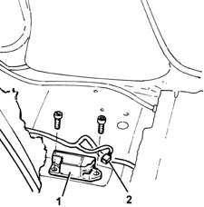
1, Sensor 2, Electrical connection
Sidebag module
The sidebag is housed in the outer part of each of the front side seats.
It consists of a container, incorporated in the seat backrest, which houses the gas generator and the folded bag.
The gas generator consists of a detonator which can be electrically activated by a signal coming from the electronic control unit.
A propellent charge is then triggered, which releases a compressed gas (Argon). This expands into the bag, which is smaller than the front bag.
After being inflated by the gas, the bag deflates immediately through a hole on the rear.
The seat cover has stitching with pre-determined breakage lines which allow the bag to come out completely.
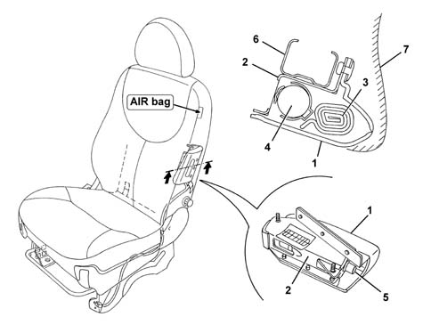
1, Outer cover 2, Container 3, Folded bag 4, Gas generator 5, Electrical connection 6, Backrest structure 7, Seat cover
Applies to: all engines; production: da 09/03, da 04/02 a 08/03
The vehicle is equipped with an extensive safety system consisting of:
- front seat belt pretensioners
- front driver and passenger Air Bags.
- Side Air Bags
- Window Bag
The system operates:
- in the case of a frontal impact of a certain magnitude, the front seat belt pretensioners and the driver and passenger Air Bags.
- in the case of a side impact of a certain magnitude, the side Air Bag, located in the seat, and the Window Bag, located in the roof panel, on the side of the impact are activated. The Head Bag protects the top area of both the front seat and the rear seat on the side the impact takes place.
SYSTEM COMPONENTS
Refer to the illustration
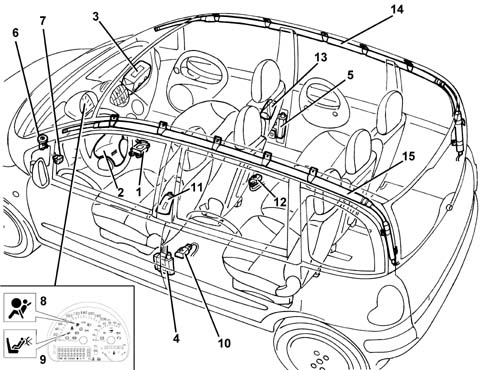
1 - Electronic control unit 2 - Driver's Air Bag 3 - Passenger Air Bag 4 - Driver's seat belt pretensioner 5 - Passenger seat belt pretensioner 6 - Switch disabling passenger Air Bag 7 - Diagnostic socket for checking the system 8 - Warning light in the instrument panel for signalling faults 9 - Warning light in the instrument panel for signalling passenger Air Bag disabling 10 - Driver side side impact sensor 11 - Sensor for driver's Side Bag 12 - Side impact sensor on right door pillar 13 - Sensor for passenger Side Bag 14 - Passenger Window Bag 15 - Driver's Window Bag
Electronic control unit
The car is fitted with an electronically-controlled passive safety system which, in the case of a front-end or side crash, partly or completely activates the safety devices depending on the severity of the impact.
The front protection system known as the SMART 2 because it is capable of automatically adapting the activation parameters depending on the seriousness of the accident.
Operation in the case of frontal impact
In the case of a frontal impact, the electronic sensor detects a proportional to the severity of impact.
If the signal, processed by the control unit's processor, indicates a crash severity such as to require the intervention of the system, the control unit, as the first intervention level, commands the activation of only the pretensioners or, in the case of a more severe impact, the pretensioners and front Air Bags.
The front Air Bags, in turn, feature dual stage activation by means of a twin pyrotechnic charge (dual stage)
The dual stage system allows differentiated inflation when the front Air Bags are activated: maximum inflation energy or minimum inflation energy. This energy is controlled by using two charges for each Air Bag which are primed in sequence in accordance with a strategy processed by the actual control unit.
The calculation algorithm used by the control unit for frontal impacts is capable of assessing the extent of the impact and implementing a differentiated activation of either one or both stages.
Operation in the case of side impact
Similarly, when there is a side impact, the control unit is capable of recognizing the direction and the intensity, activating the three Air Bags fitted on the side affected by the impact. In order to provide complete cover for side impacts, there are two satellite sensors located in the centre pillars (left and right). When a side impact occurs, the satellite sensors detect the direct crash signal along the car's transversal axis, and send it to the control unit. This assesses consistency with its internal safety sensor and activates the relevant side bags. This signal, processed by a microprocessor inside the control unit, detects the severity of the side impact and decides whether to set off the side Air Bag on the side concerned only if the safety sensor is enabled by the control unit.
Individual Side Air Bags work independently of one another and independently of the other safety devices.
After each activation of one of the systems operated (pretensioners, front Air Bags, side Air Bags), the control unit memorises the activation in non-deletable memory and causes the fault warning light on the instrument panel to come on.
Before being replaced, the control unit guarantees the activation of the individual devices within the following limits:
- 3 impacts with activation of the front seat belt pretensioners only or the rear seats belts as well, if fitted;
- 3 impacts in total with activation of the side Air Bags (right or left)
- 1 impact with activation of the pretensioners and front Air Bags;
- any combination of the above cases until one of the limits indicated is reached.
If one of the limits described has not been reached, it will be possible, after restoring the operating conditions of the system, to reuse the control unit after carrying out the RESET procedure by means of the EXAMINER. The last activation, for each of the sequences, will prevent further reset conditions.
Control unit pin-out
Refer to the illustration.
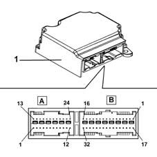
CONNECTOR A (24 way)
PIN | SIGNAL |
|---|---|
relay | Earth |
5 | Crash output (N.C.) |
6 | Diagnostic line K |
7 | Passenger's Air Bag disablement warning light signal |
8 | Air Bag system failure warning light signal |
10 | Passenger's Air Bag disablement signal (+) |
11. | Passenger's Air Bag disablement signal (-) |
12. | Supply controlled by the ignition |
17 | Passenger Air Bag activation (+) (2. stage) |
18 | Passenger Air Bag activation (-) (2. stage) |
19 | Driver's Air Bag activation (-) (2. stage) |
20 | Driver's Air Bag activation (-) (2. stage) |
21 | Passenger Air Bag activation (-) (1. stage) |
22 | Passenger Air Bag activation (-) (1. stage) |
23 | Driver's Air Bag activation (-) (1. stage) |
24 | Driver's Air Bag activation (-) (1. stage) |
CONNECTOR B (32 way)
PIN | SIGNAL |
|---|---|
relay | Driver pretensioner activation (-) |
relay | Driver pretensioner activation (+) |
3 | Passenger pretensioner activation (-) |
4 | Passenger pretensioner activation (+) |
5 | Driver sidebag activation (-) |
6 | Driver sidebag activation (+) |
7 | Driver's Window Bag activation (-) |
8 | Driver's Window Bag activation (+) |
9 | Passenger Side Bag activation (-) |
10 | Passenger sidebag activation (+) |
11. | Passenger Window Bag activation (-) |
12. | Passenger Window Bag activation (+) |
17 | Earth |
24 | Driver's side sensor signal (+) |
25 | Passenger side sensor signal (+) |
26 | Driver's side sensor signal (-) |
27 | Passenger side sensor signal (-) |
For further details see the wiring diagram [E7030 AIRBAG]
Driver's Air Bag
The Air Bag is a passive safety device made up of a bag which, in the case of a frontal impact, automatically inflates placing itself between the bodies of the vehicle occupants and the structure of the front part of the passenger compartment.
The driver's Air Bag module is located in the centre of the steering wheel; it is fitted on a tilting plate which enables the horn to be operated.
The plate, fixed to the steering wheel by two bolts, houses the metal container with the folded bag and the gas generator device.
The module consists of:
- a plastic cover; which in the case of activation tears in predefined points to allow the bag to expand correctly;
- a bag, with a volume of about 55 litres, made of nylon fabric to minimise skin abrasions in the case of contact, and folded in a particular way so that it inflates gradually and not directly facing the driver;
- a hybrid type gas generator (98% Argon, 2% Helium), two stage;
- a casing.
The diagram below shows the driver's Air Bag module
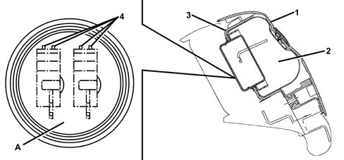
1 - Cover 2 - Bag 3 - Casing 4 - Electrical connections A - view of connections: Air Bag first stage (green) and Air Bag second stage (yellow)
Operation
The Bag is inflated by a gas generator which has two intervention stages which can be activated separately depending on the severity of the impact.
The gas generator is activated by means of two propellant charges which release the compressed gas allowing the bag to expand. The two pyrotechnic charges are activated in sequence: the difference in time between the activation of the first and second charges determines the Bag inflation energy which can be either maximum energy if the difference in time is short or minimum energy where this difference is longer (in any case these periods of time refer to tens of thousandths of a second).
Depending on the extent of the impact, whether or not the seat belts are fastened and (passenger side only) the weight of the passenger, the control unit activates the Air Bag in accordance with the two intervention modes; if the impact is not very serious, the system can opt to inflate the Bag with a minimum energy level to prevent the Bag from harming the driver/passenger when it inflates.
When fully inflated, the cushion is in the optimum position to carry out its function to retain the occupant. The bag deflates immediately thanks to the holes present in the lower part of the bag. These holes also perform the function of 'softening' the contact between the passenger and the bag preventing the risk of abrasions.
Clock spring
The diagram below illustrates the clock spring
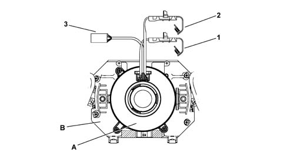
1 - Electrical connection for Air Bag first stage (green) 2 - Electrical connection for Air Bag second stage (yellow) 3 - Connection for other steering wheel electrical functions A - Clock spring B - Stalk unit
Specifcations
The clock spring makes it possible to transmit the rotation of the steering wheel to the release mechanism inside the casing, transfer the electrical signal for the controls on the steering wheel (horn and other optional control) and connect the Air Bag module with danger of breaking.
The device, consisting of two plates is secured by means of the lower plate to the stalk unit, and is joined to the steering wheel by means of specific recesses on the upper plate. The module connecting cables and the horn buttons are wound around inside the two plates allowing them to follow the movement of the steering wheel.
Composition
The clock spring on the steering wheel has three cables, two of which is for connecting the Air Bag module (first and second stage) and one of which is for connecting the steering wheel electrical functions (horn, radio controls).
On the upper plate, steering wheel side, there is a ring which automatically blocks the rotation between the two plates when the device is removed from the steering wheel.
The new device is supplied with a safety key for transport. This key should be removed before fitting.
Operating
Inside the two plates, the connecting cables for the Air Bag module and the various electrical functions are wound in a spiral, with a sufficient number of coils to follow the steering wheel's rotations. The upper plate rotates by means of the recesses present inside the locking ring which fit in the seating on the steering wheel hub. In the working position, the steering wheel presses on the ring, freeing it from the recesses, thus unlocking the rotation between the two plates. When the steering wheel is removed, pushed by a spring, it blocks the rotation between the two plates. This function prevents the top plate, no longer locked to the steering wheel, from turning freely and causing the sprial inside the device to unwind or wind and then possibly break.
In operations involving the removal of the steering wheel and the device, the following must be observed:
- always operate with the wheels lined up straight;
- lock the two plates with a band, for safety reasons, before removing the device from the steering column switch unit.
Passenger air bag
The passenger Air Bag module is located on the facia, and it protects the two front passengers.
It is a module which consists of two gas generators which inflate a single large bag (120 litres) of a suitable shape to protect the occupants of the central and side seats. This absolutely innovative solution provides optimum protection for both occupants.
The composition and operation are the same as the driver's Air Bag, but with two gas generators, of the same type as that installed in the steering wheel.
The passenger module is fixed directly to the vehicle crossmember by a special bracket.
A linen-faced cover contains the folded bag, but does not prevent it from emerging in the case of activation.
1- Vehicle crossmember 2 - Passenger's Air Bag module 3- Bag cover 4 - Gas generators 5 - Electrical connections
Module flap
A plastic flap whichis integrated in the dashboard allows the bag to come out correctly when it inflates.
It is connected to the dashboard by means of four metal pins.
It is also fixed to the crossmember by two retaining belts which, in the case of activation of the Air Bag, allow the flap to rotate and retain it.
In the case of intervention of the Air Bag, the flap opens upwards, thereby allowing the bag to come out completely and correctly.
1 - Fastening pins 2 - Retaining belts 3 - Flap
Passenger air bag disablement switch
The activation of the passenger Air Bag can be excluded voluntarily by the control unit by means of a switch operated by the car key, which is located on the facia, inside the closed glove compartment, opposite the driver
This device must only be used if a child is seated at the front, on a proper child seat, which is rear facing; the switch must be set to OFF.
In this case, the control unit excludes the activation of the passenger's Air Bag and also switches on the 'passenger's Air Bag disablement' warning light on the instrument panel.
Do not operate the device when the ignition is on (e.g. using the second key): in this case the control unit would memorize an error, and the 'Air Bag failure' warning light would come on.
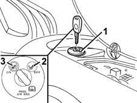
1 - Key switch 2 - OFF position: passenger's Air Bag disabled 3 - ON position: passenger's Air Bag enabled
Pretensioners
Pretensioners are pyrotechnic devices which can be electrically activated by a signal coming from the electronic control unit integrated in the front seat belt reel.
They intervene, in the case of an impact of a certain magnitude, to recover the inevitable extension of the belts due to the action of the body weight, keeping the body close to the seat backrest.
At the end of the operation, the belt remains locked, thereby signalling that the device has been operated.
Operation
The diagram below shows the pretensioner mechanism
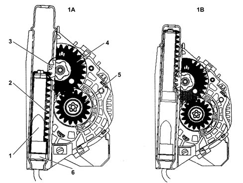
1A - Before activation 1B - After activation 1 - Gas generator 2 - Rack piston 3 - Toothed wheel 4 - Toothed wheel 5 - Toothed bush 6 - Pyrotechnic charge
The moment the vehicle deceleration is sufficiently high, the electronic sensor located in the control unit sends a signal which primes the pyrotechnic charges for the gas generators (6). The burning of the propellant (1) produces a chemical reaction creating (inert) gas whose pressure creates a force which thrusts the rack pinion (2) upwards. The latter causes the toothed wheel (3), connected to the toothed wheel (4) to rotate; The ring gear meshes with the toothed bush (5) changing the rotary movement of the spindle to the opposite direction to the unwinding of the seat belt, rewinding it by several centimetres.
The special seat belt fastened sensors (O.L. sensors) located in the front seat belt buckles, allow the control unit to detect whether or not the seat belt is fastened and to suitably adapt the activation of the Bags and prevent the activation of the pretensioners (which, if the seat belts were not fastened, would constitute an additional cost when the vehicle is repaired).
SIDE IMPACT SENSORS
There is an accelerometric sensor on the two front door pillars which, in the case of a side impact, transmits a signal to the control unit.
This signal is also processed inside the control unit which, as a result, decides on the operation of the side Air Bag on the side where the impact has taken place.
The control unit., is fitted with a second safety sensor which detects side impact (in the same way as the front impact sensor) and enables the sidebag on side where the impact is detected
This sensor is positioned in such a way that it detects iimpact only on the side where it is located: e.g. the sensor on the driver's pillar detects only impact from the right and does not detect impact from the left.
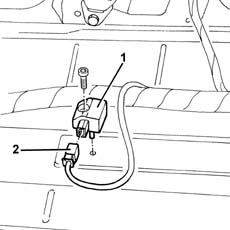
1 - Sensor 2 - Electrical connection
.
SIDEBAG MODULE
The sidebag is housed in the outer part of each of the front seats.
It consists of a container, incorporated in the seat backrest, which houses the gas generator and the folded bag.
The gas generator consists of a detonator which can be electrically activated by a signal coming from the electronic control unit.
A propellent charge is then triggered, which releases a compressed gas (Argon). This expands into the bag, which is smaller than the front bag.
After being inflated by the gas, the bag deflates immediately through a hole on the rear.
The seat cover has stitching with pre-determined breakage lines which allow the bag to come out completely.
1 - Outer cover 2 - Container 3 - Folded bag 4 - Gas generator 5 - Electrical connection 6 - Backrest structure 7- Seat cover
.
WINDOW BAG
The Window Bag provides further protection for the occupants of the front seats and also for the occupants of the rear seats in the case of a side impact.
In particular, it makes it possible to improve the degree of protection for the occupants of the front seats because, in addition to the chest area which is already protected by the Side Bags, it also protects the head.
It also offers the first protection to the occupants of the rear seats.
The device consists of a Window Bag curtain which inflates and positions itself between the occupant's head and the side windows.
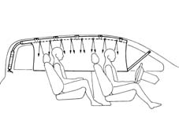
1 - Window Bag curtain in fully inflated position
The Window Bag folded bag is located under the roof panel, whilst the rear pillar houses the gas generator.
The module containing the bag is shaped like a long tube: it is fastened at five anchorage points to the roof side member. The mounting brackets, with pre-set breaking points, allow the bag to unfold correctly downwards in the case of operation.
The front pillar cover is flexibly fastened so that it can detach from its housing to allow the Window Bag to unfold but, to avoid swamping the passenger compartment, it is retained by a spring.
The cut and the stitching of the bag ensure that if the bag is filled with gas it inflates evenly and assumes the ideal shape for protecting the occupants even if they are different sizes.
Special breather holes allow the bag to inflate immediately after activation.
To keep the Window Bag module in the correct position even during inflation, it is secured to the bodyshell by means of a retaining strap at the front: in this way, if the windows break during the impact and the roof side member is distorted, the module always keeps in the correct position in relation to the occupants it is protecting.
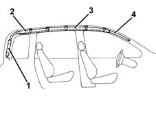
1 - Gas generator 2 - Window Bag module 3 - Window Bag folded bag 4 - Retaining straps
'AIR BAG SYSTEM FAILURE SIGNAL' WARNING LIGHT
During starting (key in ON position), the red coloured 'Air Bag failure' warning light comes on for about 4 seconds (initial self-test stage) and then goes out.
The warning light remains on or comes on, during the normal operation of the vehicle, in the following cases:
- the control unit detects a fault in the Air Bag system
- the control unit detects an impact which activates the system, even partially (pretensioners only)
- the control unit detects a fault in the actual warning light connection circuit.
'PASSENGER AIR BAG DISABLED' WARNING LIGHT
During starting (key in ON position), the orange coloured 'passenger Air Bag disabled' warning light comes on for around 4 seconds.
If the key for the manual disabling of the passenger Air Bag is switched OFF, the warning light remains on.
SYSTEM AUTODIAGNOSIS
The control unit carries out a continuous autodiagnosis of the system operation. In particular:
- it detects and memorizes any faults
- it recognizes the various components and the type of fault
- it signals the onset of these faults via the special warning light in the instrument panel:
- if a fault is detected with the manual disabling switch, it is considered in the OFF state and therefore the operation of the passenger Air Bag is inhibited.
The faults stored in the control unit memory can be cancelled, after the fault has been repaired, using the Examiner or other diagnostic equipment.
System activations following a particularly serious impact are memorized by the control unit.
In the case of an impact which has caused the complete system to be activated (Air Bag and pretensioners) it is not possible to cancel the control unit memory and it must therefore always be replaced.
If, on the other hand, only the pretensioners are activated, the memory can be cancelled twice. The control unit only has to be replaced if it is activated a third time.
As in the case of a side impact, the memory can be cancelled twice. Only in the case of a third activation, irrespective of which of the two sides it involves, should the control unit be replaced.
Applies to: all engines; all production periods
Inside the control unit, there is an accelerometric sensor whose signal, suitably processed by a microprocessor, makes it possible to determine the severity of an impact and consequently to decide whether or not to activate the Air Bags.
A second sensor with safety functions gives the enablement for activation of the Air Bags.
The control unit detects frontal collisions, or those within a certain angle of impact.
In the case of side or rear-end impacts (shunts) or the vehicle overturning, if the system is not activated, this does not mean there is a malfunction.
System self-test
The control unit carries out a continuous self-test of the system's operation.
In particular:
- it detects and memorizes any faults
- it recognizes the various components and the type of fault
- it signals the onset of these faults via the special warning light in the instrument panel.
If a fault is detected with the manual disabling switch, it is considered in the OFF state and therefore the operation of the passenger Air Bag is inhibited.
The faults stored in the control unit memory can be cancelled, after the fault has been repaired, using the Examiner or other diagnostic equipment.
System activations following a particularly serious impact are memorized by the control unit.
In the case of an impact which has cause the system to be activated, the control unit memory cannot be cancelled, so the control unit must always be replaced.
"air bag system failure signal" warning light
During starting (key in ON position), the red coloured "Air Bag failure" warning light comes on for about 4 seconds (initial self-test stage) and then goes out.
The warning light remains on or comes on, during the normal operation of the vehicle, in the following cases:
- the control unit detects a fault in the Air Bag system
- the control unit detects an impact with activation of the system
- the control unit detects a fault in the actual warning light connection circuit.
If the control unit detects fault, it can, in certain cases, disable the system: therefore it is suggested that the User go to the closest Service Centre as soon as possible to have the fault repaired because the system is no longer capable of working properly.
Once the fault is signalled, the warning light remains on until the fault is repaired or cancelled from the errors memory using the Examiner or other diagnostic equipment.
Passenger Air Bag disabling
The activation of the passenger Air Bag can be excluded voluntarily by the control unit by means of a switch operated by the car key, which is located on the facia, inside the closed glove compartment, opposite the driver
This device must only be used if a child is seated at the front, on a proper child seat, which is rear facing; the switch must be set to OFF.
In this case, the control unit excludes the activation of the passenger's Air Bag and also switches on the "passenger Air Bag disablement" warning light on the instrument panel.
Do not operate the device when the ignition is on (e.g. using the second key): in this case the control unit would memorize an error, and the "Air Bag failure" warning light would come on.
1, Switch with key 2, OFFPosition : Passenger Air Bag disabled 3, ONPosition : Passenger Air Bag enabled
"passenger air bag disabled" warning light
During starting (key set to ON position) the orange coloured "passenger Air Bag disabled" warning light comes on for about 4 seconds.
- if the key for the manual disabling of the passenger Air Bag is switched OFF, the warning light remains on.
- if, on the other hand, the key is switched ON, the warning light flashes for a further 4 seconds and then goes out.
Topics linked from this page (3)
- 7065 SEAT BELTS AND ACCESSORIES
- 5580C12 clock spring for air bag module on steering wheel r r
- E7030 AIRBAG